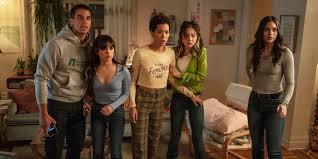
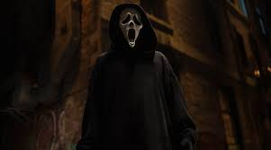
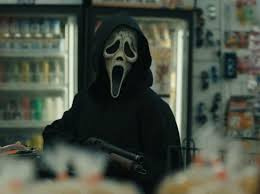
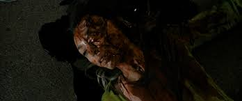
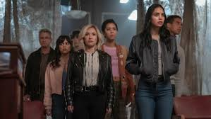
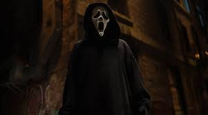
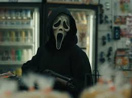
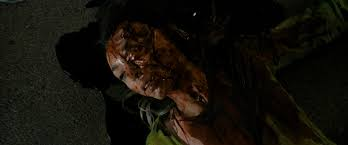
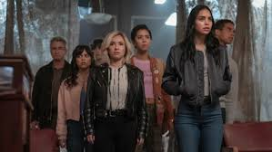

Scream 6 kwam uit op : 10 maart 2023
Verhaal
"Scream VI" gaat verder met de overlevenden van de vorige films, waaronder Sam en Tara Carpenter, die hun leven in New York proberen op te bouwen na de traumatische gebeurtenissen in Woodsboro. Terwijl ze proberen verder te gaan, duikt er een nieuwe Ghostface-moordenaar op die hen begint te stalken.
De film speelt met thema's van trauma en identiteit, terwijl de personages worden geconfronteerd met hun verleden en de invloed van de horrorfranchise op hun leven. De spanning bouwt zich op met meerdere wendingen en onverwachte onthullingen, terwijl ze proberen te ontdekken wie de nieuwe moordenaar is en waarom ze hen target.
De mix van klassieke slasher-elementen, scherpe dialogen en sociale commentaar op de moderne horrorcultuur maakt het een spannende en verfrissende toevoeging aan de franchise.
Personages en Cast
- Sam Carpenter (Melissa Barrera) – Dochter van Billy Loomis, probeert haar verleden te verwerken.
- Sara Carpenter (Jenna Ortega) – Sam's zus, overleefde de gebeurtenissen in Scream (2022).
- Chad Meeks-Martin (Mason Gooding) – Randy's zoon en een overlevende van Scream (2022).
- Mindy Meeks-Martin: Nerdy en analytisch, gebruikt haar horrorkennis om de situatie te begrijpen.
- Kirby Reed: Terugkerend personage uit "Scream 4", helpt de overlevenden met haar ervaring.
- Ghostface: De nieuwe moordenaar, met een onbekende identiteit en motieven.
Weetjes over Scream 6
Shots
 






